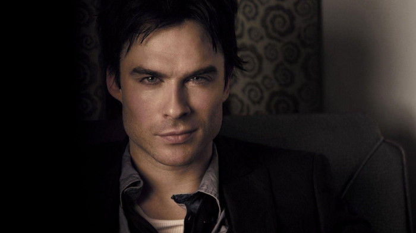
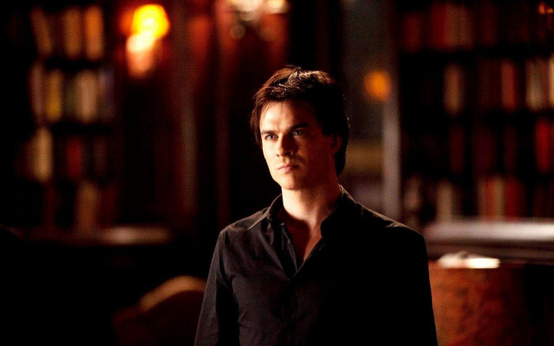
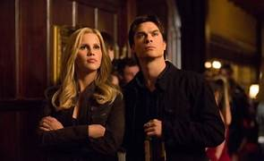
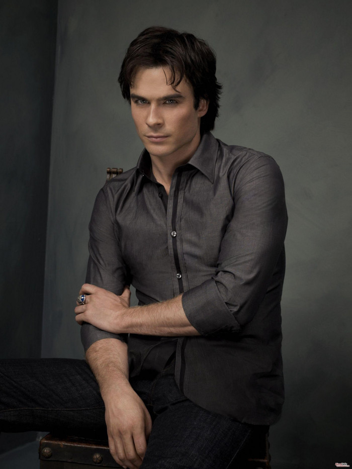
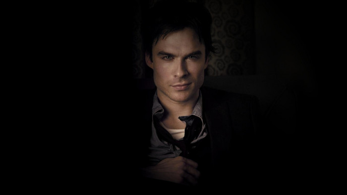

Turned : By Katherine Pierce on September 25, 1864 (transition initiated by Giuseppe Salvatore)
Status : Deceased (Found Peace)
Species :
Human/Doppelgänger ,
Vampire (Niklaus' bloodline/Broken) (Cured/Formerly)
Gender :
Male
Role

Damon Salvatore plays a significant and multifaceted role in "The Vampire Diaries." Known for his charismatic and unpredictable nature, Damon's character adds depth, conflict, and intrigue to the story.
1. Complex Anti-Hero
Damon embodies the archetype of the anti-hero, often acting as a foil to his brother Stefan. He is initially portrayed as a reckless and self-serving vampire, driven by his own desires and with little regard for others. However, as the series progresses, Damon's layers are peeled back, revealing his capacity for love, loyalty, and personal growth.
2. Love and Relationships
Damon's romantic relationships, particularly with Elena Gilbert, form a central aspect of his role. His passionate and complicated love for Elena drives his actions, leading to intense moments of devotion, sacrifice, and heartbreak. His relationships also extend to others in the series, including his bond with his brother Stefan and his deep connection with his best friend, Alaric Saltzman.
3. Redemption and Self-Reflection
Damon undergoes a profound journey of redemption throughout the series. As he confronts his dark past and the consequences of his actions, he begins to question his choices and seeks forgiveness. His growth is marked by self-reflection, moments of remorse, and a genuine desire to become a better person, often guided by his love for Elena and the influence of his loved ones.
4. Dynamic and Charismatic Presence
Damon's charisma and magnetic personality make him a captivating character. He brings a sense of excitement and unpredictability to every scene he's in. Whether engaging in witty banter, displaying his impulsive nature, or showcasing his ruthless yet captivating charm, Damon's presence on screen leaves a lasting impact.
5. Catalyst for Conflict and Drama
Damon's actions and choices often lead to conflict and dramatic plot developments. His moral ambiguity and propensity for recklessness create tension among the characters and drive the narrative forward. He serves as a catalyst for many of the show's major events, pushing the story in unexpected directions and forcing other characters to confront their own demons.
Damon Salvatore's role in "The Vampire Diaries" encompasses a complex blend of romance, redemption, growth, and captivating charisma. As an anti-hero with layers of depth, his character brings a dynamic and transformative presence to the series, leaving a lasting impression on both the other characters and the audience.
Nature

Damon Salvatore's nature is a complex and multi-faceted aspect of his character in "The Vampire Diaries." He is known for his volatile and unpredictable behavior, which stems from a combination of his vampiric instincts, emotional turmoil, and personal history.
1. Impulsive and Reckless
Damon's nature is marked by his impulsive and reckless tendencies. He often acts on instinct, driven by his emotions and desires without fully considering the consequences. This impulsiveness leads him to make snap decisions, engage in risky behavior, and sometimes disregard the well-being of others.
2. Chaotic and Unpredictable
Damon's nature is characterized by chaos and unpredictability. He has a penchant for stirring up trouble and creating havoc wherever he goes. His actions can range from playful mischief to outright violence, making him an enigmatic and compelling presence in the series.
3. Emotional Turmoil
Damon's nature is deeply influenced by his emotional turmoil. He carries a weight of guilt, heartbreak, and resentment, which fuels his darker impulses. His emotions often get the best of him, causing him to act out in destructive ways or seek solace in his vampire instincts.
4. Vulnerability and Hidden Depths
Beneath Damon's seemingly cold and ruthless exterior lies vulnerability and hidden depths. He masks his pain and vulnerability with sarcasm and bravado, often using humor as a defense mechanism. As the series progresses, glimpses of his wounded soul and capacity for love and empathy shine through, showcasing a more nuanced and complex nature.
5. Love and Devotion
Despite his tumultuous nature, Damon's capacity for love and devotion is a significant part of his character. He loves fiercely and passionately, often to the point of obsession. His love for Elena Gilbert drives many of his actions, showcasing his deep emotional connection and willingness to sacrifice for those he cares about.
6. Constant Struggle
Damon's nature is a constant struggle between his darker impulses and his desire to be better. He battles with his own demons, trying to find redemption and reconcile his past actions with his present self. This internal conflict adds depth to his character and fuels his growth throughout the series.
Damon Salvatore's nature is a blend of impulsiveness, chaos, emotional turmoil, vulnerability, and a complex mix of love and devotion. It is through the exploration of these facets that his character evolves, challenges his own nature, and navigates the intricate web of relationships and conflicts in "The Vampire Diaries.
Relationships
1. Katherine Pierce
The relationship between Katherine Pierce and Damon Salvatore in "The Vampire Diaries" is a tumultuous and passionate connection that spans centuries. Katherine, a doppelgänger of Elena Gilbert, shares a complicated history with Damon, filled with manipulation, betrayal, and an undeniable allure. Their relationship is marked by intense chemistry and a constant push-and-pull dynamic.
From the moment they first meet, Damon is captivated by Katherine's charm and beauty. She becomes the object of his desire, and their relationship is fueled by a passionate and often destructive love. Katherine, a master manipulator, plays with Damon's emotions, keeping him at arm's length while drawing him closer. Their connection is volatile, characterized by moments of intense affection and moments of betrayal that leave Damon emotionally wounded.
Throughout the series, Damon's relationship with Katherine serves as a catalyst for his actions and shapes his character. He is driven by a desire to possess her and to prove himself worthy of her love, even as he becomes aware of her manipulative nature. Despite the pain and heartbreak Katherine inflicts upon him, Damon remains drawn to her, creating a complicated and enduring bond that lingers throughout the series.
2. Elena Gilbert
The relationship between Damon Salvatore and Elena Gilbert in "The Vampire Diaries" is an epic love story that unfolds across multiple seasons, captivating audiences with its depth, complexity, and emotional impact. From their initial encounters to the culmination of their romance, Damon and Elena's journey is a rollercoaster of intense chemistry, challenges, and unwavering love. They navigate through obstacles, face their own inner demons, and make sacrifices for each other, showcasing the transformative power of their connection. Despite the hurdles they face, their bond remains unbreakable, transcending time and even death itself. Damon and Elena's love story is a testament to the enduring power of love, the capacity for redemption, and the profound impact that one person can have on another's life.
Their relationship evolves from initial attraction to a deep partnership built on trust, loyalty, and unwavering support. They stand together against supernatural threats, sharing experiences that strengthen their bond. Through their journey, Damon's character undergoes growth and transformation, inspired by Elena's unwavering belief in his capacity for goodness. Their love inspires them to confront their own flaws, make difficult choices, and ultimately find redemption. Damon and Elena's story showcases the transformative and enduring power of love, leaving a lasting impression on both the characters themselves and the audience who witnesses their epic journey.
3. Rebekah Mikaelson

The relationship between Rebekah Mikaelson and Damon Salvatore in "The Vampire Diaries" is a complex and tempestuous connection that spans across multiple seasons. Rebekah, a member of the Original vampire family, and Damon share a love-hate dynamic, filled with attraction, manipulation, and a shared history.
Their relationship is characterized by a push-and-pull dynamic, with moments of intense passion and moments of bitter rivalry. Rebekah's allure and beauty captivate Damon, drawing him in despite his reservations. They share a tumultuous romance that is fueled by both their undeniable chemistry and their history of betrayal and manipulation. Their interactions often oscillate between love and animosity, as they struggle to trust each other and reconcile their conflicting desires.
Despite the challenges they face, there are moments of vulnerability and genuine connection between Damon and Rebekah. They find solace in each other's company, sharing intimate moments of understanding and empathy. Their relationship is a rollercoaster ride of intense emotions and unpredictable turns, ultimately leaving a lasting impact on both characters as they navigate the complexities of their supernatural world.
Human Side

1. Capacity for Love
Despite his initially guarded and aloof demeanor, Damon possesses a deep capacity for love. He experiences intense emotions and forms meaningful connections with others, particularly with Elena Gilbert. His love for Elena is all-consuming and brings out his most vulnerable and selfless side.
2. Vulnerability and Emotional Struggles
Damon's human side is marked by vulnerability and emotional turmoil. He carries the weight of his past actions and wrestles with guilt and remorse. His internal conflicts and struggles with his own darkness make him a complex and multi-dimensional character.
3. Loyalty and Protective Nature
Damon showcases unwavering loyalty to his loved ones. He is fiercely protective of those he cares about and is willing to go to great lengths to keep them safe. This loyalty extends to his relationships with Stefan, Elena, and his friends, demonstrating his commitment and dedication.
4. Self-Reflection and Personal Growth
Damon's human side is evident in his journey of self-reflection and personal growth. He confronts his own flaws, acknowledges his past mistakes, and actively seeks redemption. Over the course of the series, he strives to become a better person, grappling with his darker impulses and striving to find a balance between his vampire nature and his desire to be a better man.
5. Compassion and Empathy
Beneath his tough exterior, Damon possesses a compassionate and empathetic nature. He is capable of understanding and relating to others' pain and struggles. This empathy is demonstrated through his interactions with characters like Bonnie, where he develops a genuine bond and offers support and understanding.
6. Desire for Acceptance and Connection
Damon's human side yearns for acceptance and genuine connection. He longs to be seen for more than just his dark deeds and to be loved and accepted for who he truly is. This desire drives him to seek emotional connections and to find redemption in the eyes of others.
Damon Salvatore's human side adds depth and complexity to his character, revealing a range of emotions, struggles, and desires. It showcases his capacity for love, vulnerability, loyalty, personal growth, and empathy. These aspects humanize him, allowing audiences to connect with his journey of self-discovery and transformation throughout "The Vampire Diaries."
Story Arcs

Damon Salvatore's story arcs in "The Vampire Diaries" encompass a wide range of experiences, growth, and transformation. His character undergoes significant development as he navigates complex relationships, battles his inner demons, and strives for redemption. Here are some notable story arcs of Damon Salvatore:
1. The Anti-Hero
Damon starts off as the "bad boy" of the series, embracing his dark nature and indulging in his vampiric instincts. He revels in chaos and uses manipulation and violence to get what he wants. This initial arc establishes Damon as an unpredictable and morally ambiguous character.
2. Love and Redemption
One of the central story arcs for Damon is his love for Elena Gilbert and his journey towards redemption. As he falls deeply in love with Elena, Damon begins to question his own actions and seeks to become a better person. He grapples with his darker impulses and strives to make selfless choices to protect and save those he loves.
3. Brotherly Bonds
Damon's complicated relationship with his brother Stefan is a recurring theme throughout the series. From deep-seated rivalry to moments of genuine camaraderie, their bond is tested time and again. Their story arc explores themes of family, forgiveness, and the complexities of sibling dynamics.
4. The Search for Humanity
Damon's quest to regain his humanity is a significant story arc. At various points in the series, he turns off his emotions, embracing his darker instincts. However, the journey to switch his humanity back on becomes a pivotal turning point for his character, leading to self-discovery, growth, and a deeper understanding of his own identity.
5. Sacrifice and Redemption
Damon's story arc is marked by numerous acts of sacrifice. He often puts himself in harm's way to protect his loved ones, displaying selflessness and a willingness to change for the greater good. These acts of sacrifice highlight his evolving sense of morality and desire for redemption.
6. Legacy and Legacy
Towards the end of the series, Damon's story arc explores his desire to leave a positive legacy. He becomes invested in the future and strives to make amends for his past mistakes. This arc delves into themes of forgiveness, redemption, and the impact one's actions can have on others.
Damon Salvatore's story arcs in "The Vampire Diaries" offer a rich tapestry of growth, transformation, and exploration of morality. From his anti-hero beginnings to his journey of love, redemption, and self-discovery, Damon's character development captivates audiences, showcasing the complexity of his journey and the evolution of his relationships with others.